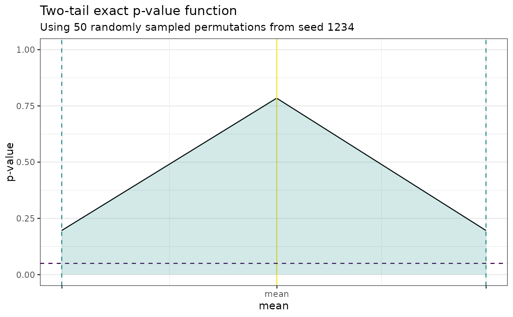

This function plots the plausibility function for up to two parameters of interest.
plot_pf(pf, alpha = 0.05, ngrid = 10, ncores = 1, subtitle = "")
| pf | A |
|---|---|
| alpha | A numeric value specifying a significance level to contrast the
plausibility function against. Defaults to |
| ngrid | An integer specifying the grid size on which the plausibility
function will be evaluated. Specifically if |
| ncores | An integer specifying the number of cores to use for
parallelized computations. Defaults to |
| subtitle | A string for specifying a subtitle to the plot. Defaults to
|
A ggplot object.
x <- rnorm(10) y <- rnorm(10, mean = 2) null_spec <- function(y, parameters) {purrr::map(y, ~ .x - parameters[1])} stat_functions <- list(stat_t) stat_assignments <- list(mean = 1) pf <- PlausibilityFunction$new( null_spec = null_spec, stat_functions = stat_functions, stat_assignments = stat_assignments, x, y )#>#>pf$set_parameter_bounds( point_estimate = pf$point_estimate, conf_level = 0.8 )#>#>pf$set_grid( parameters = pf$parameters, npoints = 2L )#>pf$evaluate_grid(grid = pf$grid) plot_pf(pf)